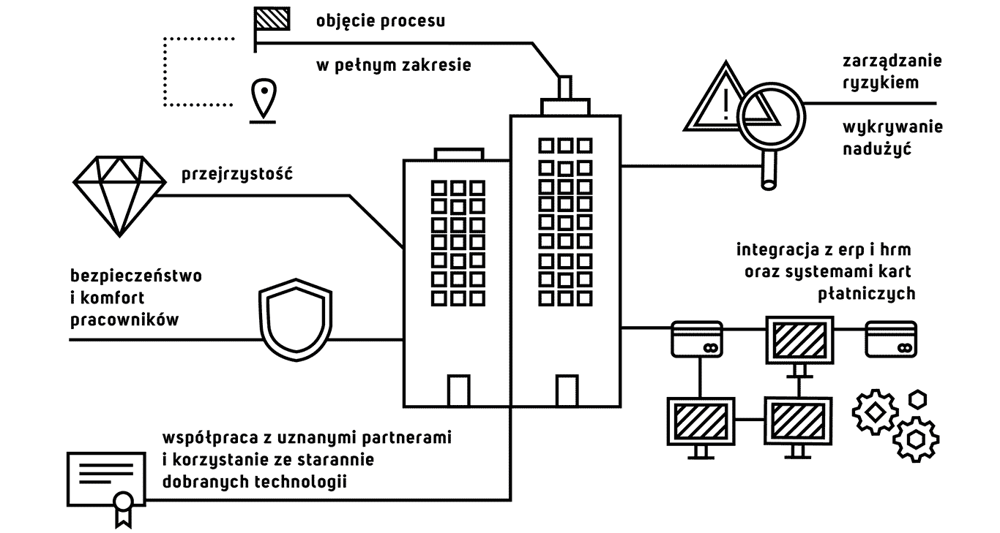

W dużej firmie pracownicy odbywają zazwyczaj wiele podróży służbowych i rozliczają wiele wydatków. W typowej organizacji podróżuje około 10% personelu. Oznacza to zawsze jedno: ogromne ilości nieustrukturyzowanych operacji biznesowych i dokumentów. Przy dużej skali biznesu kluczowe jest zapewnienie efektywności organizacji i przebiegających w niej procesów. Dodatkowo, szeroka i skomplikowana działalność sprzyja powstawaniu nadużyć i marnotrawstwa zasobów. Myśląc o klientach tej grupy przygotowaliśmy funkcjonalności dla zapewnienia:
